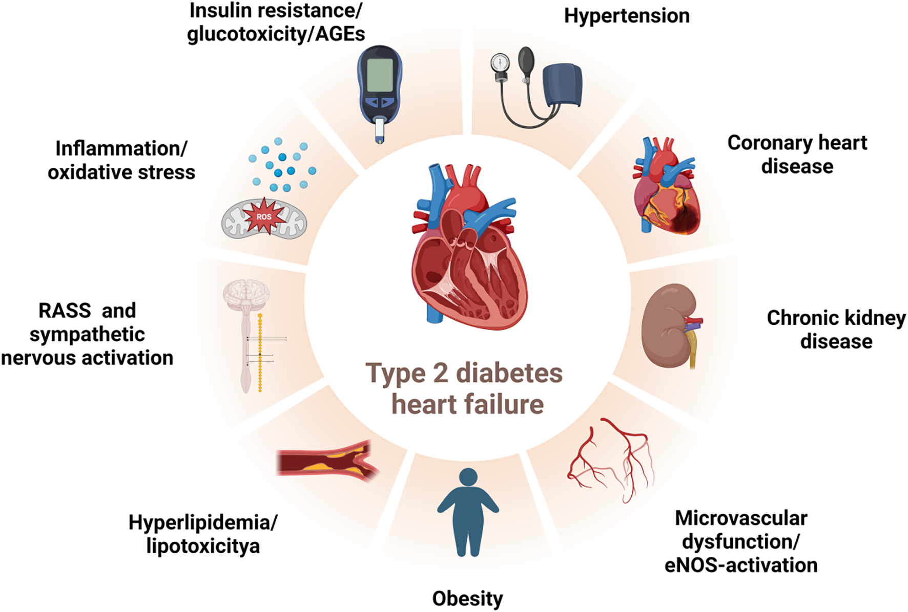
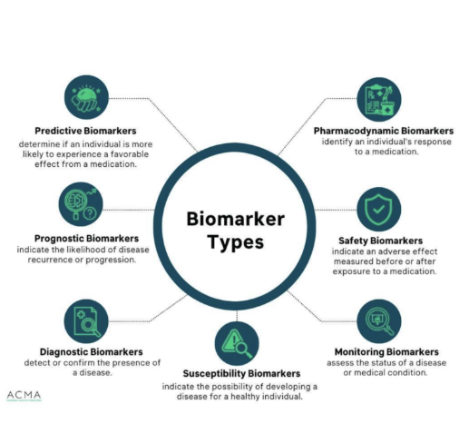

Introduction
Type 2 Diabetes, Chronic Kidney Disease (CKD), and Heart Disease may be thought of as separate conditions, but they are closely interconnected. Individuals with one of these conditions are significantly more likely to develop another. The pancreas, heart, and kidneys are all critical components of the metabolic system, which is responsible for converting food into energy. Because these organs are closely linked, dysfunction in one can have direct effects on the others. For example, insulin resistance and impaired insulin production associated with Type 2 Diabetes can contribute to poor kidney function and increased blood pressure, placing significant strain on the cardiovascular system. Not only in the United States, but also worldwide, these conditions are extremely common. While these diseases have detrimental effects on an individual's health and quality of life, improvements in education and treatment have helped lessen their burden. However, they remain chronic conditions that often affect individuals throughout their lives, and developing additional related conditions is common. As such, prevention and early detection continue to be vital for improving patient outcomes. Because these diseases are deeply rooted in metabolic function, they share many biological indicators associated with disease development and progression. This project investigates whether routine blood biomarkers can reveal shared risk patterns among Type 2 Diabetes, Chronic Kidney Disease, and Heart Disease while specifically examining the role of Chronic Kidney Disease as an intermediate condition between diabetes and cardiovascular disease.
According to the CDC, approximately 40 million Americans have diabetes, with Type 2 Diabetes accounting for nearly 95% of cases. Additionally, roughly 115 million Americans are prediabetic due to a variety of lifestyle factors. Heart disease, used here as an umbrella term for conditions affecting the cardiovascular system, is estimated to affect more than 120 million people. The similarity in these numbers is far from coincidental, as Type 2 Diabetes and cardiovascular disease share a bidirectional relationship. Having one condition substantially increases the risk of developing the other. There are several mechanisms through which Type 2 Diabetes contributes to cardiovascular disease. One major example is that persistently high blood glucose levels damage the arteries over time, promoting plaque buildup. Other contributing factors include elevated levels of low-density lipoprotein (LDL) cholesterol, hypertension, and chronic inflammation. Conversely, cardiovascular disease can contribute to the development of Type 2 Diabetes. For example, poor circulation may impair insulin delivery throughout the body, gradually increasing insulin resistance. The relationship between cardiovascular disease and Type 2 Diabetes has been extensively studied, and many of their risk factors overlap. In addition, several biomarkers have been identified as indicators of both diseases, including measures of insulin regulation, inflammation, and oxidative stress.
What makes this triad of conditions difficult to dissect is that they share many of the same upstream/ risk factors. Several lifestyle and health factors like obesity, physical inactivity, poor diet, hypertension, and chornic inflammation all independently contribute to independently to the development of these conditions. Recognizing shared and interacting risk factors provide significant value to biomarkers-based predicition, as blood and urine measurements can capture systemic disfunction before the disease has been diagnosed. This means that habits and conditions that contribute to the development of one disease also influxes the risks of development towards another. Insulin resistance, a hallmark of Type 2 Diabetes, is a significant risk factor shared among all the conditions. Developed insulin resistance drives systemic changes in the cardio vascular system, specifically blood pressure, metabolism, and cardiac stress. High blood pressure for instance, is both a consequence of dibetes and a direct cause of kidney damage and cardiovascular strain. Similarily, chronic inflammation is present among all three conditions as could serve as a common thread between their progression. The overlap in risk factors pressents some challeneges in determining which specific condition drives disease progression. This ambiguity motivates studying chronic kidney disease as a mediator, rather than soly a comorbidity.
One advantage of studying these diseases through biomarkers is that many physiological changes occur long before clinical symptoms become apparent. Biomarkers such as blood glucose, HbA1c, cholesterol levels, triglycerides, creatinine, and other indicators of metabolic and kidney function provide measurable evidence of underlying biological processes. Because these measurements are routinely collected during standard medical examinations, they offer an accessible way to identify patterns of disease risk and progression. By analyzing biomarker profiles across individuals with Type 2 Diabetes, Chronic Kidney Disease, and Heart Disease, it may be possible to identify shared characteristics that distinguish these conditions and reveal how they are biologically connected. Understanding these relationships could improve early detection efforts and help identify individuals who may be at increased risk of developing additional metabolic or cardiovascular complications.
Like diabetes and cardiovascular disease, chronic kidney disease (CKD) is an increasingly common condition, the CDC stating that 1 in every 7 Americans have CKD. The kidneys are an absolutely vital organ within the body, responsible for filtering blood from metabolic waste and maintaining fluid balance. Damage and ailments of the kidneys can cause life threatening conditions; kidney infections, polycystic kidney disease, and chronic kidney disease. Chronic kidney disease results from years of gradual damage to the kidneys, potentially weakening them to the point of kidney failure or end-stage kidney disease. CKD is characterized by the kidney’s inability to effectively filter blood,causing an excessive amount of fluid and waste to accumulate inside the body. A build up of toxins and waste within the body can lead to even more serious health complications, highlighting the rippling effect of CKD, and its role as a comorbidity in other conditions. A particularly worrying statistic is that nearly 40% of those with reduced kidney function are unaware, as many individuals do not experience symptoms until the condition is severe. The most certain way to diagnose CKD is through blood and urine tests, particularly looking at creatine in the blood and proteins in urine. Elevated levels of these signal an accumulation of waste, thus weakening kidney function. A well understood risk factor for chronic kidney disease is diabetes, as studied in this project.
Many biomarkers associated with Type 2 Diabetes and Cardiovascular Disease are also linked to Chronic Kidney Disease (CKD). The intention of this project, however, is to examine whether Chronic Kidney Disease may act as a mediator between Type 2 Diabetes and cardiovascular disease. Both Type 2 Diabetes and Heart Disease are established risk factors for the development of CKD, and kidney dysfunction itself is known to contribute to cardiovascular complications. This interconnected relationship suggests that CKD may represent a transitional stage in the progression from metabolic disease to cardiovascular disease. By examining biomarkers commonly associated with kidney function, this project seeks to determine whether changes in these indicators can reveal shared patterns of disease progression and provide evidence for CKD's role as a mediator between Type 2 Diabetes and Heart Disease.
Research Questions (will likely add more throughout the project)
- What is the relationship between Chronic Kidney Disease and Type 2 Diabetes?
- Which biomarkers indicate and support the bidirectional relationship between Type 2 Diabetes and Cardiovascular Disease?
- What are the major biomarkers associated with CKD, CVD, and Type 2 Diabetes as individual diseases?
- What do changes in these biomarkers reveal about disease development and progression?
- Can CKD-related biomarkers help identify individuals at increased risk of developing Cardiovascular Disease?
- To what extent does Chronic Kidney Disease act as an intermediate condition linking Type 2 Diabetes and Cardiovascular Disease?
- Does Chronic Kidney Disease represent a transitional stage between Type 2 Diabetes and Cardiovascular Disease?
- Which biomarkers provide the strongest predictive power for distinguishing among Type 2 Diabetes, CKD, and Cardiovascular Disease?
- Are there biomarker patterns that indicate progression from Type 2 Diabetes to CKD and subsequently to Cardiovascular Disease?
- Which kidney-function biomarkers show the strongest association with cardiovascular risk in diabetic patients?
- Can machine learning models identify combinations of biomarkers that are more informative than individual biomarkers alone?

Figure 1. Chen, Xi, et al. “Type 2 Diabetes Mediated Heart Failure: Focus on Early Recognition and Clinical Strategies.”

Figure 2. “What Is Biomarker Testing?” Prior Authorization Training, 14 Oct. 2022.